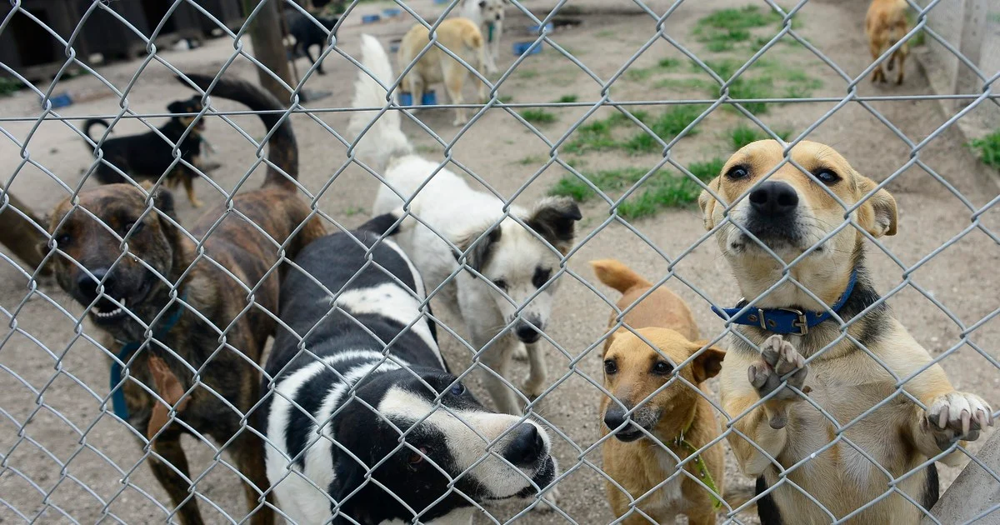

Sobre nosotros

Adopta.me surgió en el 2022 con la ayuda de amantes del mundo animal. Su objetivo es fomentar y concientizar sobre la tenencia responsable. Creemos que los animales merecen respeto y una vida digna, por lo que queremos ayudarlos a encontrar un hogar.
Nuestra idea es poder ayudar a las personas, dándole respuestas a sus dudas con consejos que les sirvan al momento de la llegada de su nuevo amigo

Nos esforzamos todos los días para ingresar nuevos animalitos que buscan una familia. Según sus caracterísitcas, evaluamos cual es el ambiente ideal e intentamos encontrarle una nueva familia que cumpla con esos requisitos.